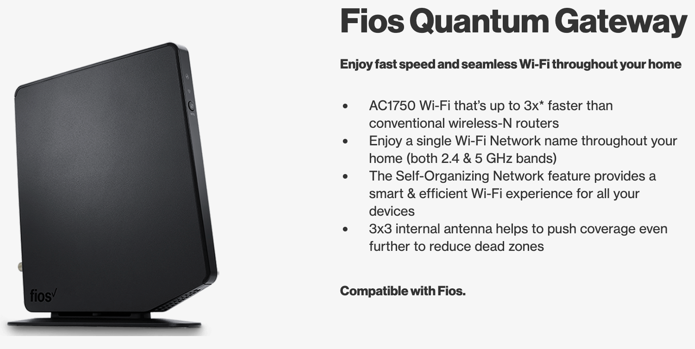
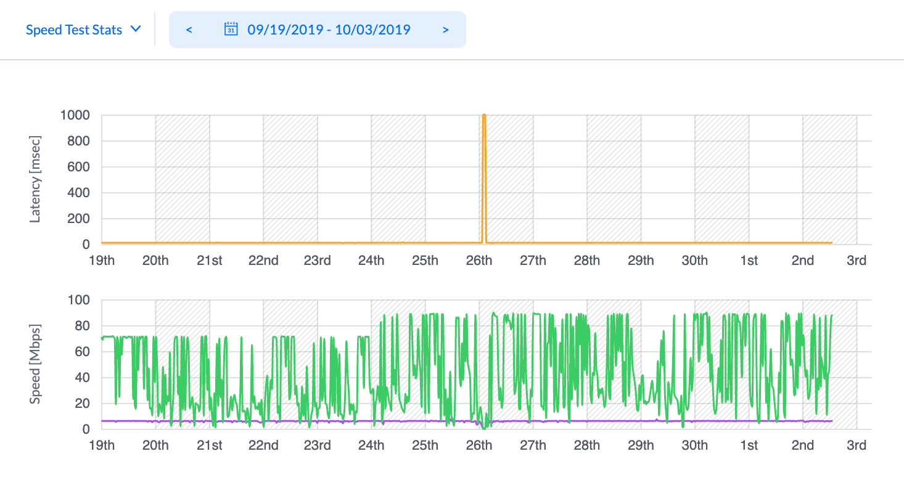
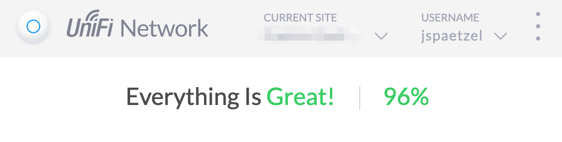

My apartment has a really simple Ubiquity configuration which is easily the best wireless setup ive had to date and only cost about $250.
The biggest difference between Ubiquity’s Unifi hardware and other standard consumer hardware is the number of devices.
Most of the time in the consumer hardware space everything is bundled into a single device. For example when I had Verizon I had something they called a Quantum Gateway which does everything. This worked alright when I had it, but we can do better.

Sounds great, right?
Issues I had
- Poor configuration options, very few advanced options
- Few if any software updates
- Poor monitoring and no alerting
- Regularly overheated and unexpectedly restarted
- Difficult to expand network with more access points
- Typically failed anytime I had a party with a lot of friends
My current configuration
I now have four devices which each serve a pretty specific function.
-
Coax Modem: By another manufacturer, this is now the weakest link in my network and is mostly mandated by my service provider. I’m hoping to replace it with a fiber modem at some point, but until then im alright.
-
Ubiquiti Unifi Security Gateway (USG): This device handles routing and security for the network.
-
Ubiquiti Networks Unifi 802.11ac Dual-Radio PRO Access Point (UAP-AC-PRO-US): A radio which is managed by the gateway.
-
Unifi Network Controller hosted in AWS: This is not a physical device but a server hosted in AWS which communicates with the Security Gateway and the Access Point to configure them and stores long term stats, logs, etc about traffic on the network.
How’s all this worked out?
Overall great! I can happily say that I have largely forgotten about my wifi network worries.
Separating the devices means none of them overheat anymore. I’ve been able to have lots of people over and all of them have been able to connect to the wireless without any issues.
I also have more features then ill ever use and I have some interesting data about how my network performs.
For example, just this week I noticed that my ISP randomly increased my maximum download speed from 70 Mbps to almost 90 Mbps. And it’s also kinda interesting to see just how… unstable that speed is more generally.

Looking forward
I have no reason to expand or change my current network, its great currently. It’s nice to know that if I move to a larger home this hardware can easily adapt, it’s as simple as plugging in a second or third access point to expand the coverage area.
Long term support seems great, the security gateway is still the latest thing being sold and the access point has seen a newer version come out but uses the same form factor, mounting brackets, and software which makes it easy to replace if I wanted to upgrade or get a second which matches. The firmware software for both devices and the controller software is regularly updated so some new features have been added since I set things up.
